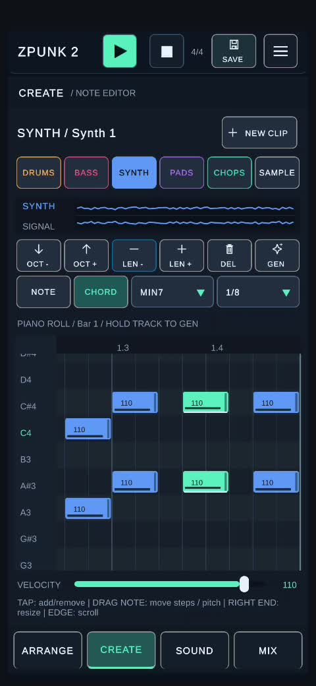

A chord progression does not have to be complicated to give a groove its character. Sometimes a couple of neighboring chords, repeated with the right timing, are enough.
In this short demonstration, I'm using ZPUNK's Chord Draw on the SYNTH track to place minor seventh chords rooted on D and D#. The note length is set to 1/8, making it easy to experiment with short stabs directly on the phone.
Watch the Chord Draw demonstration
Start with a sound and a short note length
Open a SYNTH clip in CREATE and switch from NOTE to CHORD. Select MIN7 from the chord-type menu and set the duration to 1/8. That gives you a quick way to draw short, rhythmic chords instead of entering every note separately. The same approach works on PADS if you want a softer, more sustained texture.
Build the D minor 7 and D# minor 7 idea
The video uses D and D# as the chord roots, both with MIN7 selected. D minor 7 contains D, F, A and C; D# minor 7 contains D#, F#, A# and C#. The two roots are only a semitone apart, so moving between them introduces a close, slightly uneasy shift. You do not need an elaborate progression to get an interesting groove.
Use rhythm to make the chords move
With eighth-note chord placements, you can repeat a stab, leave a gap, and then answer it with the neighboring chord. Try a few repeated D minor 7 hits followed by a D# minor 7 accent. Keep the kick and bass running while you adjust the placement; the rhythm often matters more than adding extra harmony.
Edit the pattern directly in the piano roll
The demonstration shows the notes in the piano roll, where you can move their position and pitch and adjust lengths using the editor controls. Choose a comfortable octave for the instrument and listen for how the chords sit against the bass. You can make the stabs tighter or change their spacing without rebuilding the whole idea.
Keep it a sketch, then develop it
The point of Chord Draw is not to generate a finished song in one tap. It is to remove some of the friction between hearing a chord rhythm in your head and putting it into a loop. Once the pattern feels right, try another synth preset, layer it with drums and bass, or extend the idea in ARRANGE.

Keep the harmony simple
Try two nearby minor seventh chords, change the rhythm, and listen to how the groove evolves. Chord Draw makes it straightforward to explore those ideas without leaving the piano roll.
← Back to the blog